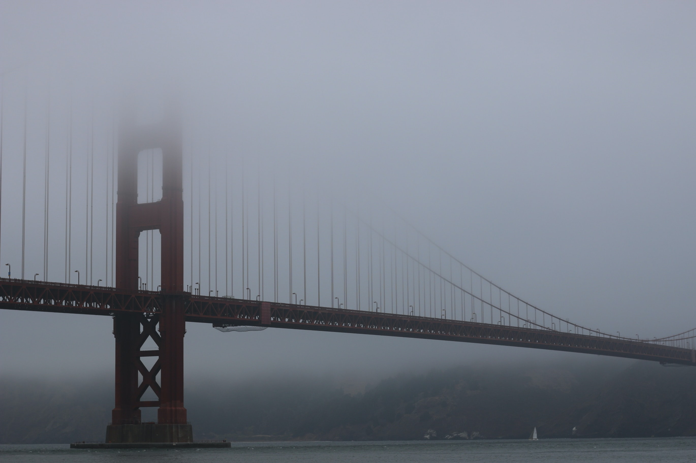

History
Perched atop hills and filled-in marshland at the entrance to one of the Pacific’s largest natural harbors, San Francisco has had an outsized influence on the history of California and the United States.

Things to Do
One of the nicest things about visiting San Francisco is that while the city is “big” in terms of attractions and amenities, it is geographically small—only 49 square miles. That makes it very easy to see and do a great many things in a short period of time.
San Francisco’s Icons
San Francisco is one of the most iconic cities in the USA, but what does it have to offer visitors, apart from a rather pretty red bridge? No matter how many times you visit San Francisco, these iconic experiences need to be on your to-do list every time.